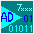

This documentation system can be used stand alone but it is also tightly integrated
into some of the Analog Devices ARM Development tools.
Visually the pages virtually always consist of 4 sections:
- Top of the screen is the copyright notice with links to further
copyright details and a link to the main Analog Devices website.
Clicking on the top center of any page gets you to this "family" start
page. Clicking on the icon on the top right of any page
 gets you to the start page of the entire system.
- The upper left block is a list of high level topics directly
available. For still higher level topics click the
Up link.
- The lower left block gives a list of sub topics within the last
item selected in the upper left block.
- The remaining (largest) block discusses the selected topic or topics
reached by navigating through the lists or through subsequent links.
On the top right of most of these blocks is a
 Context link which will update the
topics lists to those normally associated with the topic reached at that
stage.
Context link which will update the
topics lists to those normally associated with the topic reached at that
stage.
Note that with the above scheme the user can follow a thread of links but can get
back to the starting point by selecting an item from the left hand lists.
Alternatively the user can at any time click the
Context link to establish a new context starting
point.
Some low level topics have context points that are at a higher level than their
own level and very low level topics have no context points at all.
Clicking on the heading of a left hand block is equivalent to clicking the same
item in the higher level topics list.
The following general style conventions are used:
- Text in black is general text.
- Text in red gives warnings and other important information.
- Text in blue or magenta indicates links to other parts of the
documentation.
- Highlighted text in black refers to text on the user screen, e.g
menu items, button lables etc.
Generally you can press F1 To get help on the window open at that time.